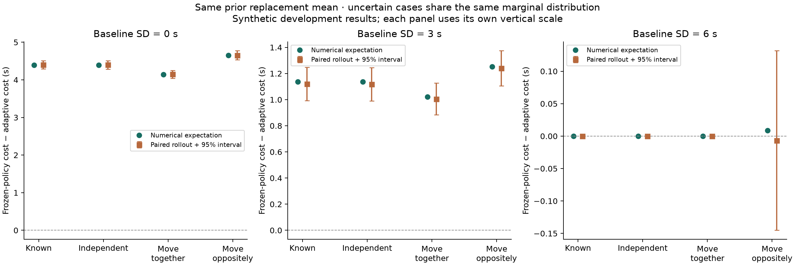

← Unknown baseline experimentEXPERIMENT 09 · REPLACEMENT TYRE UNCERTAINTY
What can the current tyres tell us about the next set?
Uncertainty alone does not necessarily change the pit strategy. What matters here is whether current observations change our expectations of the replacement tyres.
Independent uncertainty gives exactly the same policies and expected costs as known replacement performance at the same mean. This is a structural result for linear costs, expected-time optimisation and one final stop—not a claim about risk-sensitive or full-race strategy.

Export figure · Download all results and source hashes
Inspect the relationship
What do observations update?
Rates are seconds per lap of tyre age. All cases have prior expected replacement degradation 0.060. The three uncertain cases each put 50% on 0.020 and 50% on 0.100 before observing anything; only their dependence on the old set changes.
What if we assume the wrong relationship?
Actual tyres tend to move together, and actual baseline SD is 3 s. Each row gives both policies the same assumed relationship, then evaluates them on identical physical trajectories.
Each row compares adaptive versus updating frozen-belief under that row’s assumption. It is not a direct estimate of the cost of misspecification relative to the correctly specified adaptive policy.
Scope of the conclusion
There is one optional last stop, with no later decisions about the replacement set. The shared baseline remains constant. We minimise expected time and evaluate actual sampled replacement degradation in the simulations. The assumed relationships are illustrative and have not been estimated from race data.
We report separate oracles knowing the old regime and knowing both tyre regimes. Their costs happen to coincide for these selected states; that equivalence is not assumed generally. Forecast quality, posterior calibration and historical policy benefit remain separate questions.
At baseline SD 6 s, opposite movement gives only about 0.01 s of predicted gain and its simulation interval crosses zero. The nominal “stay” recommendation there is a marginal model result, not evidence of a practically reliable advantage.
47 tests pass. Historical decision replay and the final frozen study remain outstanding. No real-race time saving or novelty claim is established.